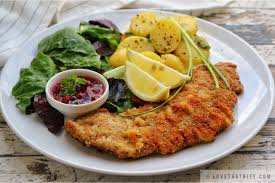

Wiener Schnitzel (Austria)
Breaded and fried veal or pork cutlet, served with lemon.
See RecipeEurope is home to some of the world’s most famous cuisines, from hearty stews to delicate pastries. Explore these iconic European dishes below.

Breaded and fried veal or pork cutlet, served with lemon.
See Recipe